Студент: ТУЙИШИМЕ Тьерри
Группа: НКАбд-05-25
1 Цель работы [1](#цель-работы)
3 Выполнение лабораторной работы [1](#выполнение-лабораторной-работы)
3.2 Выполнение некоторых действиях. [2](#выполнение-некоторых-действиях.)
3.3 Определение опции команды с помощью man. [5](#определение-опции-команды-с-помощью-man.)
3.4 Использование команду history. [7](#использование-команду-history.)
5 Ответы на контрольные вопросы [9](#ответы-на-контрольные-вопросы)
Список литературы [11](#список-литературы)
Приобретение практических навыков взаимодействия пользователя с системой по средством командной строки.
Для определения полного имени каталога я использую команду pwd. Выводится, что я в домашнем каталоге (home/mwakutaipa):
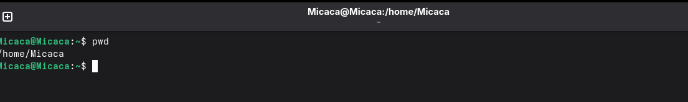
Рис. 1: Команда pwdДалее с помошью cd я перехожу в каталог /tmp и вывожу на экран содержимое каталога с помощью ls:
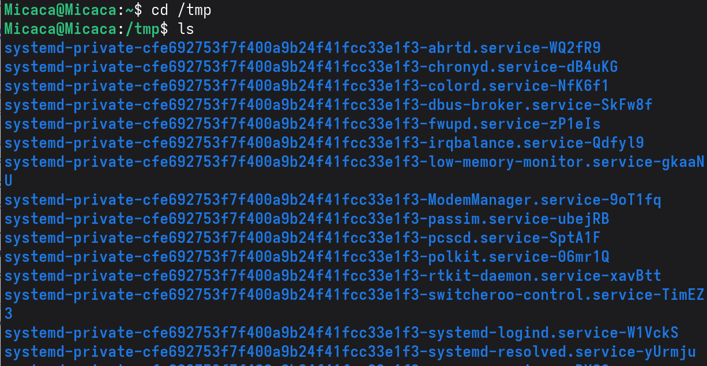
Рис. 2: Каталог /tmpВывожу на экран содержимое каталога с помощью ls -l, чтобы вывести на экран подробную информацию о файлах и каталогах (тип файла, право доступа, число ссылок, владелец, размер, дата последней ревизии, имя файла или каталога.):
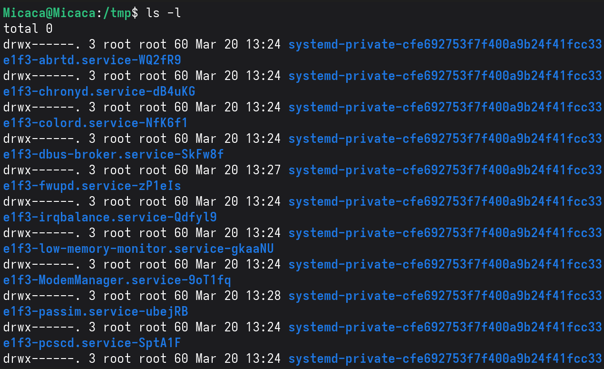
Рис. 3: Содержаемое /tmpВывожу на экран содержимое каталога с ls -F, для получение информацию о типах файлов (каталог, исполняемый файл, ссылка):
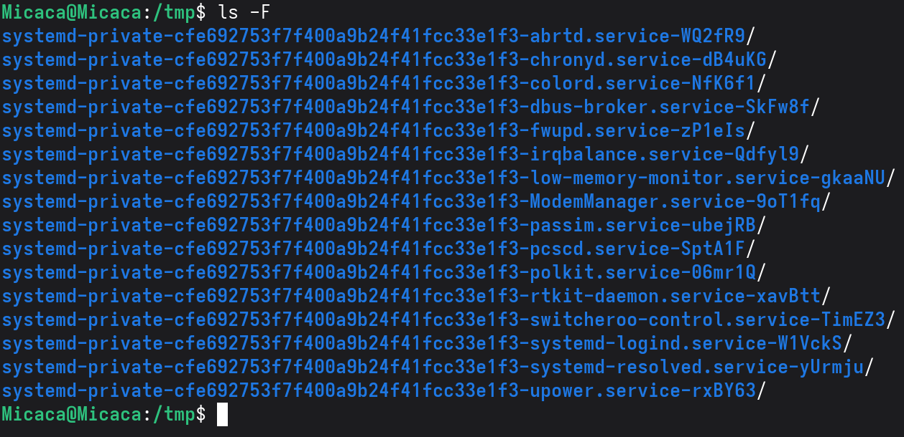
Рис. 4: Тип файлыВывожу на экран содержимое каталога с ls -a, чтобы отобразить скрытых от просмотра файлов:
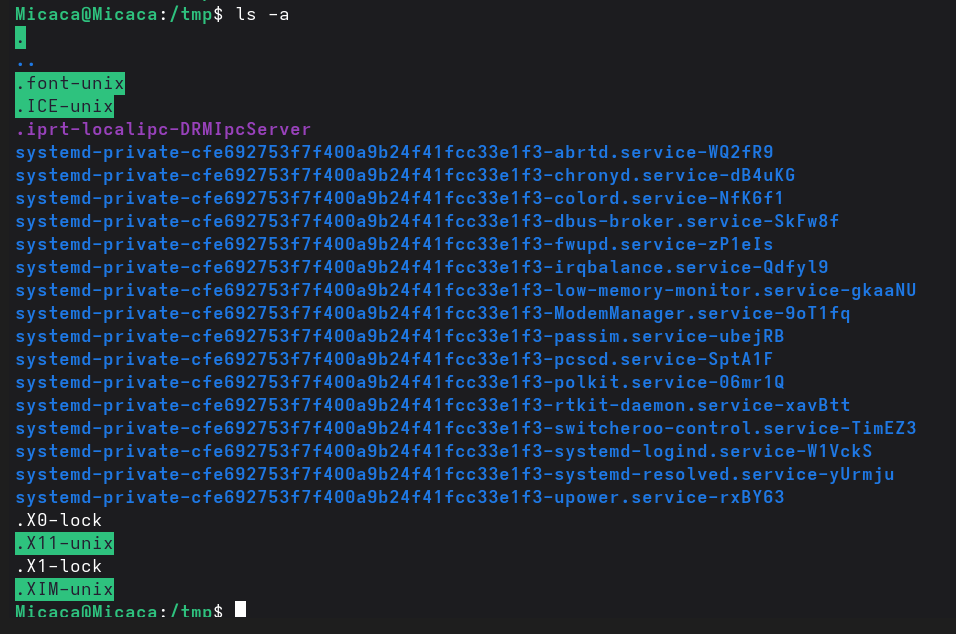
Рис. 5: Скрытые файлыЯ перехожу в каталог /var/spool/ и вывожу на экран содержимое каталога с помощью ls. Вижу, что в нем есть подкаталог cron:
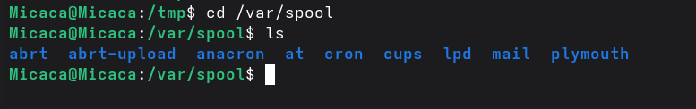
Рис. 6: Нахождение подкаталога cronПерехожу в домашний каталог и вывожу содержиемое с помощью ls -l. Видно, что mwakutaipa является владельцем файлов и подкаталогов:
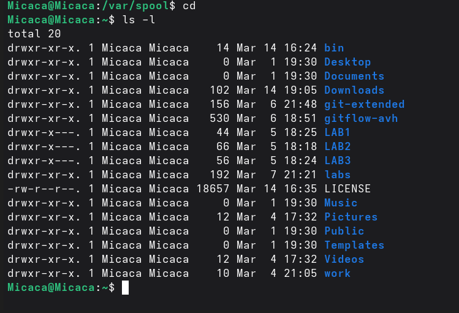
Рис. 7: владельца файловВ домашнем каталоге создаю новый каталог с именем newdir и в этом же каталоге создайте новый каталог с именем morefun одной командой. Далее использую ls, чтобы проверять:
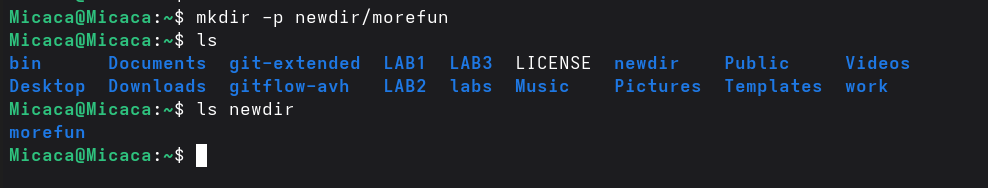
Рис. 8: Создание newdir и morefunСоздаю одной командой еще три новых каталога с именами letters, memos, misk и проверяю создание:
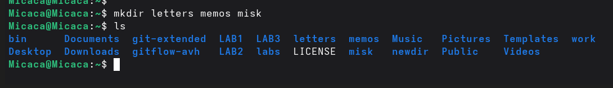
Рис. 9: Создание letters, memos, miskУдаляю эти каталоги одной командой rmdir и проверяю:
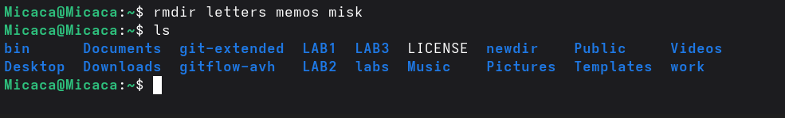
alt=“Удаление letters, memos, misk” /> Рис. 10: Удаление letters, memos, miskУдаляю каталог ~/newdir/morefun из домашнего каталога и проверяю, был ли каталог удалён:
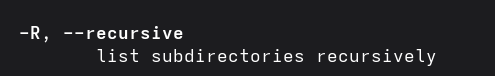
Рис. 11: Удаление ~/newdir/morefunС помощью команды man определяю, какую опцию команды ls нужно использовать для просмотра содержимое не только указанного каталога, но и подкаталогов, входящих в него. Это является опцией -R:
Рис. 12: опция ls для просмотра содержимое
Определяю набор опций команды ls, позволяющий отсортировать по времени последнего изменения выводимый список содержимого каталога с развёрнутым описанием файлов. Это является опцией -с:
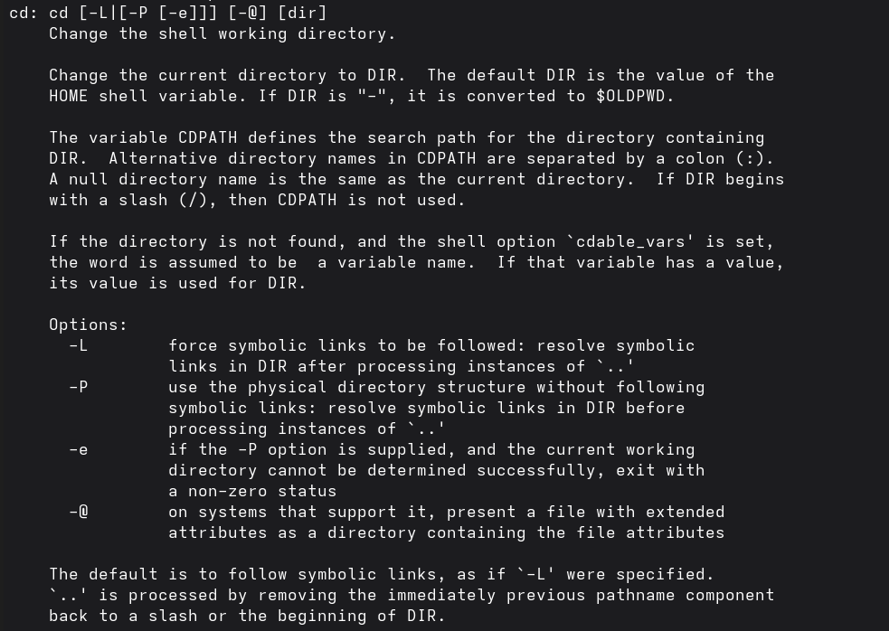
Рис. 13: Определение опций команды ls для отсортированиеС помощью man cd, узнаю описание cd и ее опции. -L переходить по символическим ссылкам после того, как обработаны все переходы. -P позволяет следовать по символическим ссылкам перед тем, как обработаны все переходы. -e позволяет выйти с ошибкой, если директория, в которую нужно перейти, не найдена.
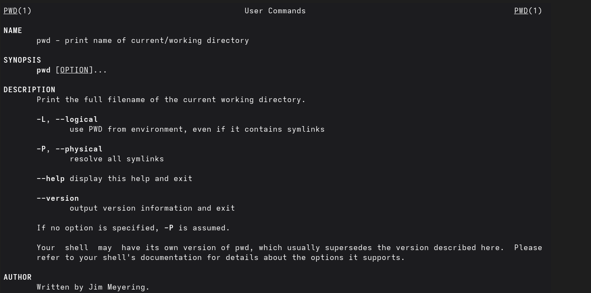
Рис. 14: Описание опции cdС помощью man pwd узнаю описание команду и ее опции. -L - брать директорию из переменной окружения. -P - отрасывать все символические ссылки.
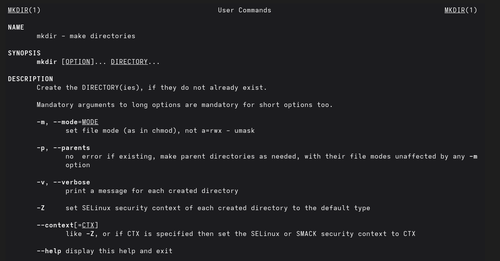
Рис. 15: Описание опции pwdОписание опции mkdir: -m – устанавливается права доступа. -p – рекурсивнно создать каталог и подкаталоги. -v – сообшается о созданных директориях. -z – устанавливается SELinux для создаваемой директории по умолчанию.
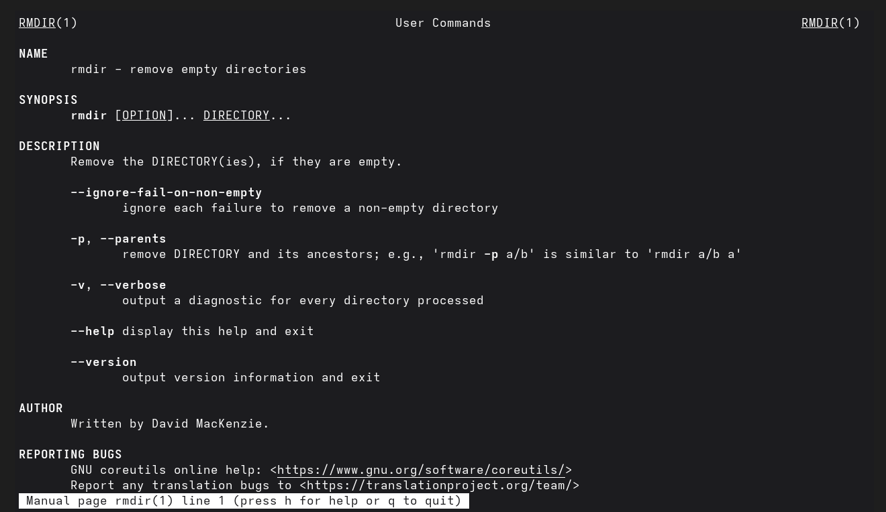
Рис. 16: Описание опции mkdirОписание опции rmdir: –ignore-fail-on-non-empty – отмняет вывод ошибки если каталог не пустой. -p – удалить рекурсивнно каталог и подкаталоги. -v – выводить сообшение о каждом удаленный директории.
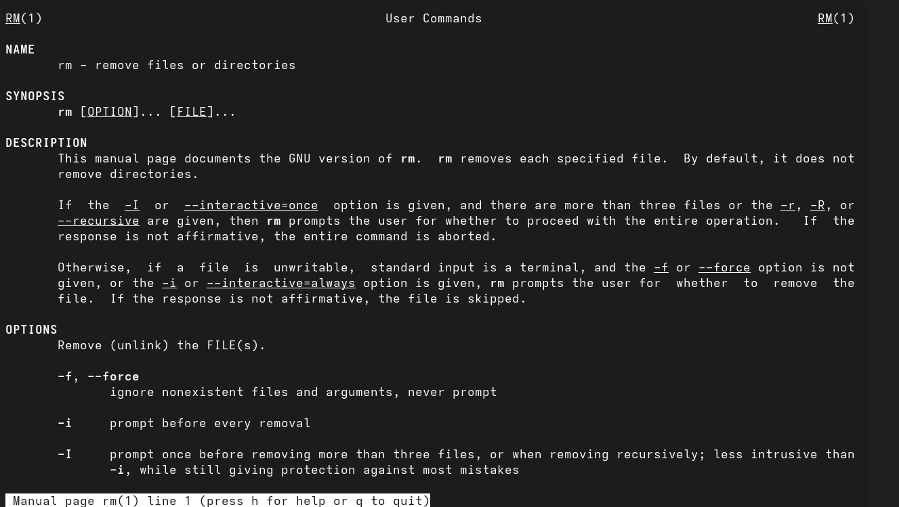
Рис. 17: Описание опции rmdirОписание опции rm: -f – игнорировать несуществующие файлы и аргументы, не выводит запрос на подтверждение удаления. -i – выводит запрос на подтверждение удаления -I – выводит один раз запрос на подтверждение удаления если удаление рекурсивнно или больше 3 раза
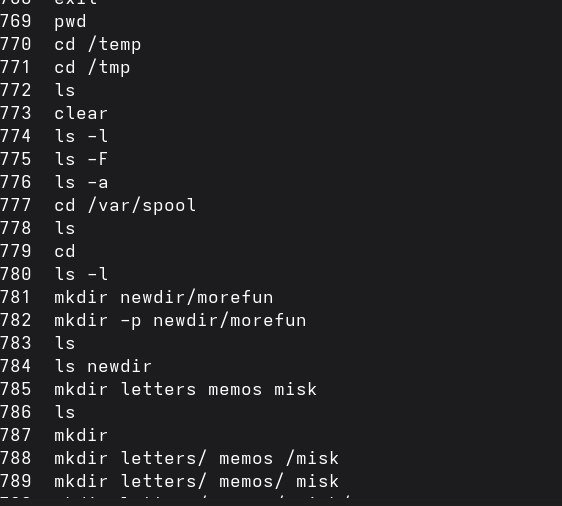
Рис. 18: Описание опции rmИспользуя информацию, полученную при помощи команды history:
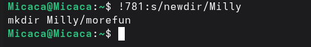
Рис. 19: команда historyВыполняю модификацию и исполнение нескольких команд из буфера команд:
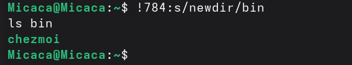
Рис. 20: модификацию и исполнение команды mkdir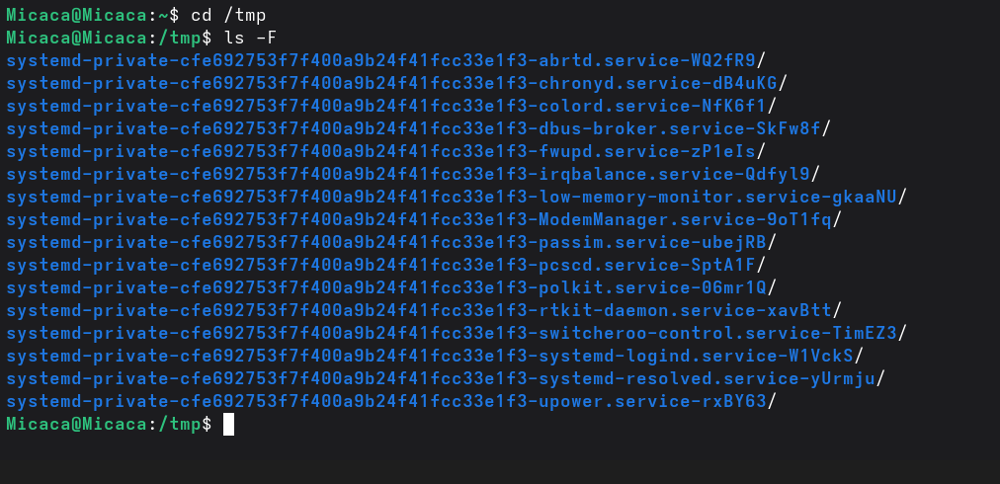
Рис. 21: модификацию и исполнение команды lsПри выполнении данной работы я приобретела практические навыки взаимодействия пользователя с системой по средством командной строки.
Текстовая система, которая передает комманды компьютеру и возврашает результаты пользователю.
pwd. Пример: если я нохожусь в своем домашнем каталоге и запускаю pwd в командной строке , то я увижу результат /home/mwakutaipa.
ls с опцией -F. Например:
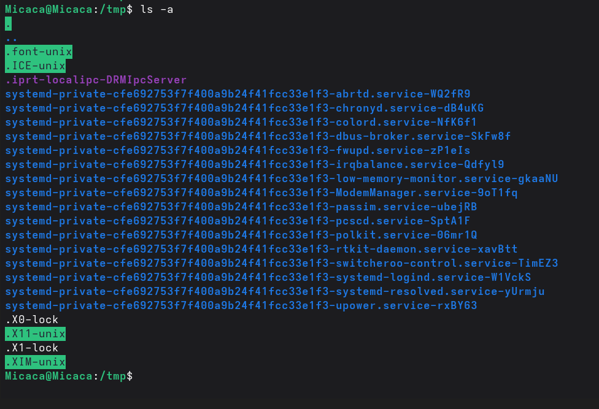
Рис. 22: Пример по использованию ls с опцией -F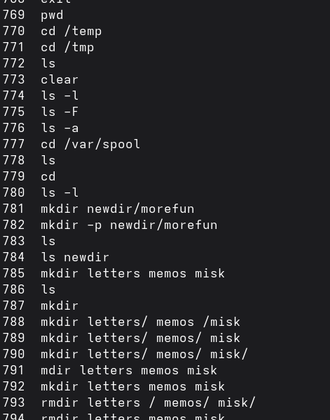
Рис. 23: Пример по использованию ls с опцией -аrmdir по умолчанию удаляет пустые каталоги, не удаляет файлы. rm удаляет файлы, без дополнительных опций (-d, -r) не будет удалять каталоги. Удалить в одной строчке одной командой можно файл и каталог. Если файл находится в каталоге, используем рекурсивное удаление, если файл и каталог не связаны подобным образом, то добавим опцию -d, введя имена через пробел после утилиты.
Вывести информацию о последних выполненных пользователем команд можно с помощью history. Пример:
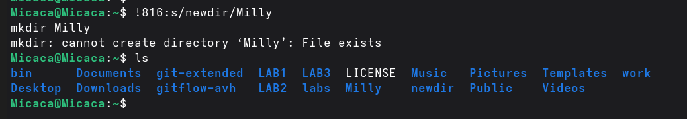
Рис. 24: Название рисунка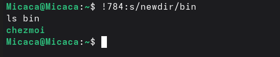
Рис. 25: Пример 1 по использованию historyРис. 26: Пример 2 по использованию history
Если я введу “cd ; ls” в домашнем каталоге, то окажусь в домашнем каталоге и получу вывод файлов внутри него.
Символ экранирования - (обратный слеш) добавление перед спецсимволом обратный слеш, чтобы использовать специальный символ как обычный. Также позволяет читать системе название директорий с пробелом. Пример: cd work/Операционные системы/
Опция -l позволит увидеть дополнительную информацию о файлах в каталоге: время создания, владельца, права доступа
Относительный путь к файлу начинается из той директории, где вы находитесь (она сама не прописывается в пути), он прописывается относительно данной директории. Абсолютный путь начинается с корневого каталога.
Использовать man или –help
Клавиша Tab.